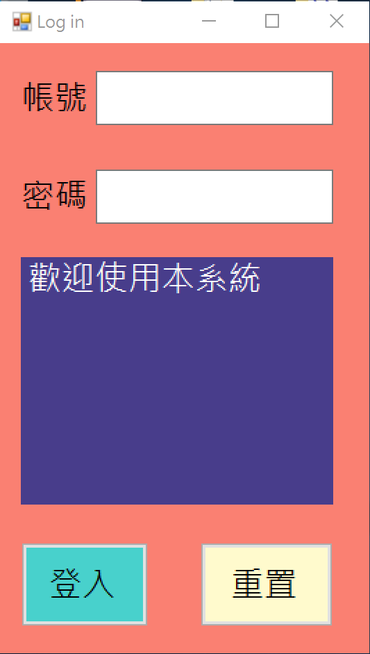
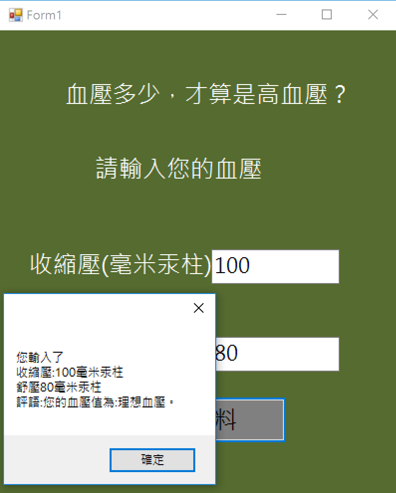
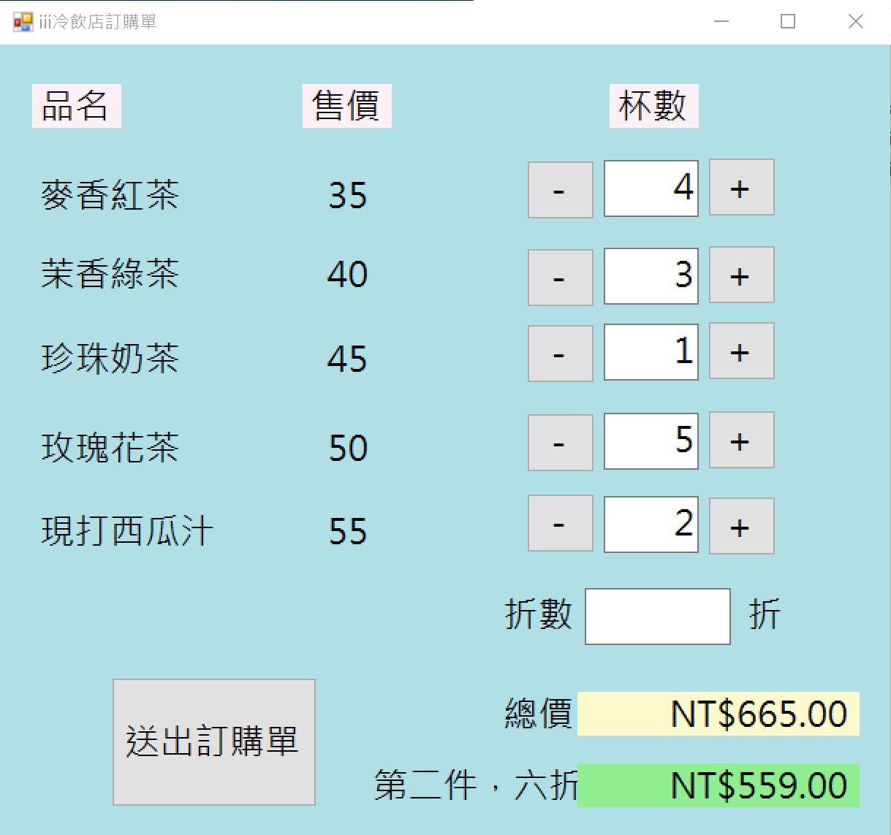
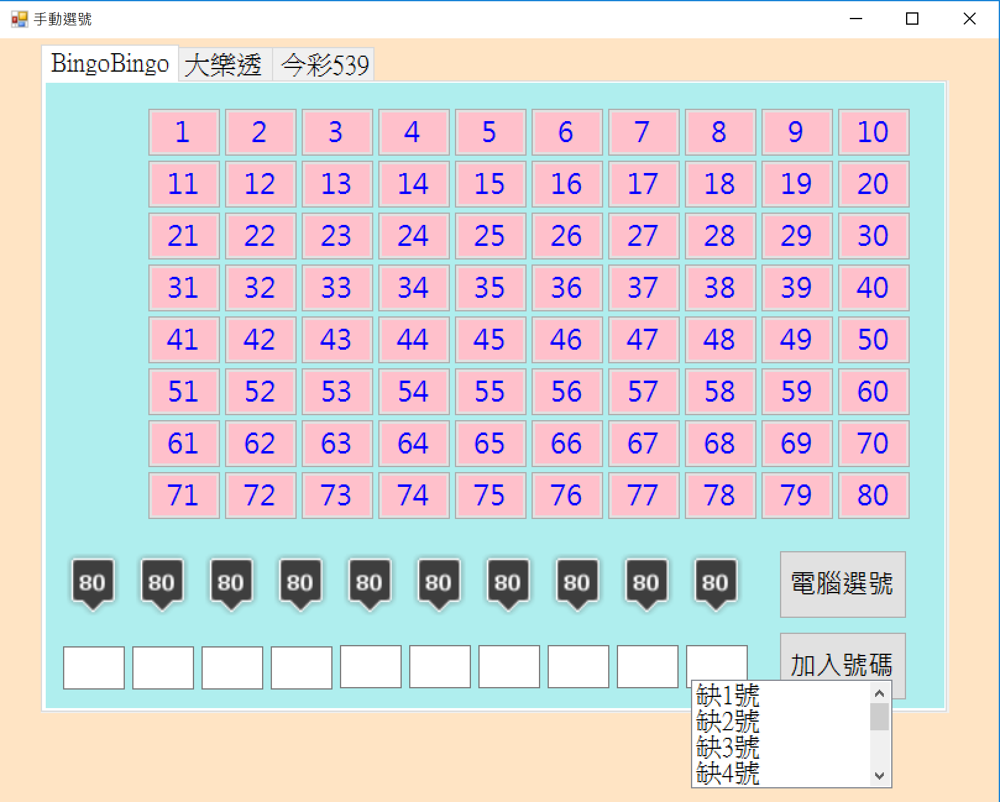
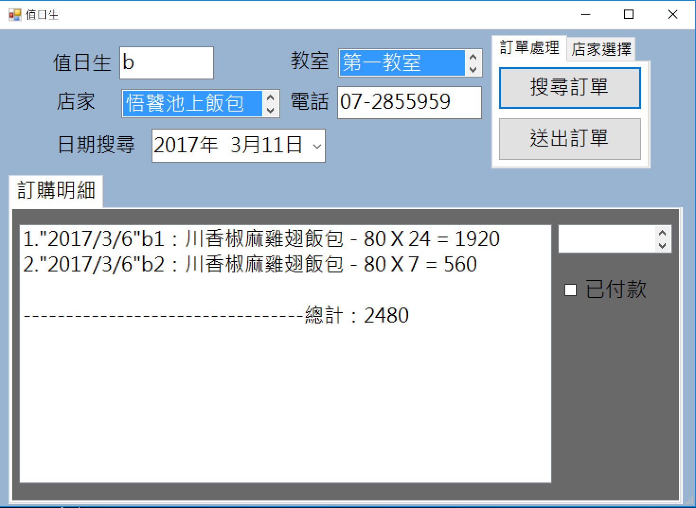

Central Management System
登入系統
血壓分期判別系統
POS系統
樂透選號系統
便當訂購系統
回首頁
歡迎參觀黃雅柏的作品集!!!

登入系統
透過與MSSQL資料庫連線，可比對多筆帳號，以及讓使用者加入帳號、搜尋、修改密碼。

血壓分期判別系統
使用者輸入收縮、舒張壓後即可知道您目前的血壓分期為何

POS系統
能精確計算店家推出優惠折扣後的總價(買2送1，第二件6折...)

樂透選號系統
讓使用者可以方便的選出自己想要的超級獎號、大樂透、539的自選、部分、電腦選號號碼

便當訂購系統
可快速蒐集訂購者、訂餐者、品項、數量、總價資訊並回傳給櫃台